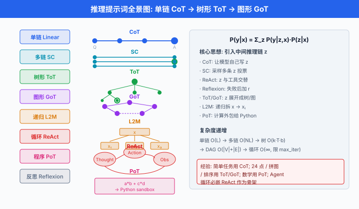
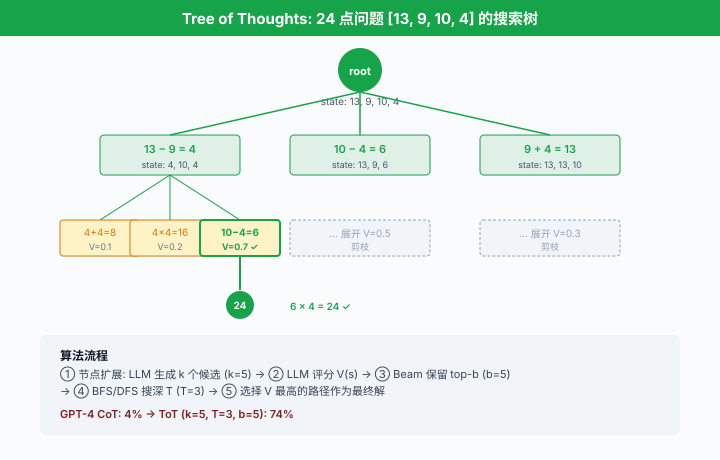
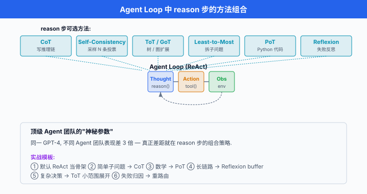

Prompt-based 推理与规划¶
一句话总结：只靠精心设计提示词，就能让 LLM 从"一口气蒙答案"变成"分步思考、多路验证、失败反思、树上搜索"；这些方法填的正是 Agent 循环里 "reason" 那一段。
第 01 节讲了 Agent 是一个 Thought → Action → Observation 的闭环。 循环骨架有了，里面的 "Thought" 具体怎么想？一个大模型面对复杂任务，如果只是"直接给答案"，数学题错一半、编程题只看第一眼、多步规划走两步就迷路。 本节讲的一整套方法 —— 从思维链到思维树 —— 全都是在不改模型权重、只改提示词的前提下，把模型的推理能力榨到极限。 它们是 Agent 的"大脑思考模式"，是从 2022 年 Wei et al. 那篇 CoT 论文之后，整个 LLM 领域被反复迭代打磨、最终收敛到工业界的十来种模板.
为什么需要"推理提示词"¶
-
一个直觉先摆出来：直接问 LLM "13 × 27 = ?", GPT-3 时代大概率答错。 但改成 "13 × 27 = ? Let's think step by step. 首先，13 × 20 = 260, 13 × 7 = 91, 260 + 91 = 351." —— 同一个模型，准确率从 17% 跳到 78% (Wei et al. 2022 在 GSM8K 上以 LaMDA 137B 为例的数字；在 PaLM 540B 上则是从 56% 提到 74%).
-
差别不在模型，在推理的显式化. LLM 是自回归生成器，每一个 Token 都基于前面所有 Token 采样。 当中间推理步骤被"写出来"，模型有了更多可以条件化的中间状态，也就更有机会走到正确答案。
-
用概率语言描述。 令 \(x\) 是问题，\(y\) 是最终答案，\(z\) 是中间推理链 (rationale). 直接回答等价于:
- 引入推理链 \(z\) 后，我们边缘化 (marginalize) 掉 \(z\):
- 这个式子告诉我们两件事:
- 好答案往往由多个中间链共同支持 —— 只跑一次拿到的答案是从这个混合分布里的一个样本，不是期望值。
-
让模型显式生成 \(z\)，相当于把 \(P(y \mid x)\) 拆成 \(P(y \mid z, x)\) 与 \(P(z \mid x)\) 两步。 每一步都是 LLM 更"自信"的短距离预测，累积起来比一步登天更准。
-
这一节讲的所有方法，本质上都是在如何构造与利用 \(z\) 上做文章:
- 让模型自己写 \(z\) (CoT, PoT)
- 采样多条 \(z\) 再投票 (Self-Consistency)
- 把 \(z\) 与外部工具穿插 (ReAct)
- 失败后加"反思" \(r\) 存下来 (Reflexion)
- 把 \(z\) 展开成树 / 图，允许回溯与合并 (ToT, GoT)
- 把大任务 \(x\) 递归拆成小 \(x_i\) (Least-to-Most)
- 迭代自我修正 (Self-Refine)

思维链 (Chain-of-Thought, CoT)¶
- 思维链 (Chain-of-Thought, CoT) 由 Wei et al. 2022 提出 (Chain-of-Thought Prompting Elicits Reasoning in Large Language Models, NeurIPS 2022). 核心一句话：示例里把推理过程写出来，模型就会跟着写.
Few-shot CoT¶
- 原始 CoT 是 few-shot 形式。 提示词里放几个"问题 + 分步推理 + 答案"三元组，让模型模仿这个模式:
Q: 罗杰有 5 个网球. 他又买了 2 罐, 每罐有 3 个. 现在他有多少个?
A: 罗杰一开始有 5 个球. 2 罐, 每罐 3 个, 共 2 × 3 = 6 个新球. 5 + 6 = 11.
答案是 11.
Q: 咖啡厅有 23 个苹果. 他们用掉 20 个做午饭, 又买了 6 个. 现在有多少?
A: 咖啡厅一开始有 23 个. 用掉 20, 剩 23 - 20 = 3. 又买 6 个, 3 + 6 = 9.
答案是 9.
Q: <你要问的新问题>
A: (模型会像上面两个示例一样, 先写推理再给答案)
-
关键设计：示例里的 "A:" 必须包含中间步骤. 只写答案的 few-shot 反而不如 zero-shot.
-
Wei et al. 在 8 个推理 benchmark 上测试，大模型 (PaLM 540B) 上 CoT 相比标准 prompt 提升普遍 20-40 个点。 但小模型 (< 100B) 上 CoT 反而变差，因为小模型写不出有意义的推理链。 CoT 是涌现能力 (emergent ability) 的经典证据之一。
Zero-shot CoT¶
- Kojima et al. 2022 (Large Language Models are Zero-Shot Reasoners, NeurIPS 2022) 发现了一个几乎作弊的技巧：只加一句 "Let's think step by step." 就能触发 CoT，不需要任何示例。
Q: 一个魔术师表演了两场秀, 每场卖出 5 张票, 每张 3 美元.
他一共赚了多少?
A: Let's think step by step.
第一场卖 5 张, 每张 3 美元, 收入 5 × 3 = 15 美元.
第二场同样 15 美元.
两场合计 15 + 15 = 30 美元.
答案是 30 美元.
-
这个简单到令人怀疑的技巧，在 MultiArith 上把 GPT-3 (text-davinci-002) 从 17.7% 拉到 78.7%，在 GSM8K 从 10.4% 拉到 40.7%. 中文里等价的引导语是 "让我们一步一步思考." 或 "我们分步分析.".
-
后续大量工作发现更强的引导语："Let's think step by step and be careful.", "Take a deep breath and work on this problem step-by-step." (Google DeepMind, 2023, Large Language Models as Optimizers). 提示词工程的黑色幽默 —— 一句"深呼吸"能提点几分。
CoT 的数学表达¶
- 用 \(z = (z_1, z_2, \dots, z_L)\) 表示推理链的 \(L\) 个中间步骤，CoT 就是让模型自回归生成这个链，最后一步是答案:
- 相比直接生成 \(y\)，引入 \(z\) 增加了模型可条件化的信息量。 但只跑一次采样，拿到的是从这个联合分布里的单点样本 —— 只要中间某一步走偏，后面步步偏。
CoT 的局限¶
- 单链无回溯：一条链走到底，中间发现错了不能重来。
- 贪心解码陷阱：温度设为 0 时，遇到"边缘概率相近"的分岔点，走错就一条道走到黑。
- 小模型不会：需要 ~100B 参数以上模型才能稳定生成有意义的推理链。
-
算术上限：对于超出训练分布的多位数运算，CoT 仍会 hallucinate 中间步骤。
-
这些局限催生了后面的 Self-Consistency, ToT 等方法。
自洽性 (Self-Consistency)¶
-
自洽性 (Self-Consistency) 由 Wang et al. 2022 提出 (Self-Consistency Improves Chain of Thought Reasoning in Language Models, ICLR 2023). 想法极简：不要只跑一次，多采样几条推理链，让答案投票.
-
直觉：如果一个问题真有唯一正解，那么"多条不同推理链最终收敛到同一答案"的概率，应该比"多条链都错得一模一样"的概率高得多。 换句话说，对的答案是收敛点，错的答案是分散点.
数学表达¶
- 给定问题 \(x\)，从 CoT prompt 采样 \(N\) 条独立链 \((z^{(i)}, y^{(i)})_{i=1}^N\) (通常温度 \(T = 0.5 \sim 0.9\))，最终答案通过多数投票决定:
-
从贝叶斯视角，这是在近似 \(\arg\max_y P(y \mid x)\)：直接采一次得到的是从 \(P(y \mid x)\) 的一个样本，采 \(N\) 次投票得到的是 \(\arg\max\) 的蒙特卡罗估计。
-
相比贪心解码 (greedy decoding) 只走概率最高的一条链，Self-Consistency 在 GSM8K 上把 PaLM-540B 从 56.5% 推到 74.4%，提升近 18 个点。
代码骨架¶
from collections import Counter
def self_consistency(llm, prompt: str, n_samples: int = 20,
temperature: float = 0.7) -> str:
"""
Self-Consistency: 采样 N 条 CoT 链, 抽答案, 多数投票.
参考: Wang et al. 2022 (ICLR 2023).
"""
answers = []
for _ in range(n_samples):
# 每次高温采样, 得到不同的推理链
resp = llm.generate(prompt, temperature=temperature)
# 从响应里抽出最终答案 (例如末尾的 "答案是 X")
ans = extract_final_answer(resp)
answers.append(ans)
# 多数投票
return Counter(answers).most_common(1)[0][0]
- 关键参数:
n_samples: 5-40 之间，收益边际递减；原论文默认 40，工程实践里 20 也是常见甜蜜点。temperature：太低多样性不够 (全部收敛到贪心解)，太高噪声大。 0.5-0.7 是主流。extract_final_answer：用正则 / 规则从"XXX. 答案是 42." 里抽 42，是工程细节但极其影响准确率。
局限¶
- 成本随 \(N\) 线性增长：\(N=20\) 意味着成本 ×20，延迟 ×20 (若不并行).
- 只在答案空间有限且可比对的任务上适用 (数学题、多选题). 对"写一段代码"这种开放答案，投票没意义 —— 后来的方法用 verifier 或 rank 而不是投票。
ReAct：推理 + 行动交织¶
- ReAct (Reasoning + Acting) 由 Yao et al. 2022 提出 (ReAct: Synergizing Reasoning and Acting in Language Models, ICLR 2023, arXiv:2210.03629). 第 01 节已经展示过它的循环骨架，这里详解它作为一种提示词模式的价值。
核心洞察¶
- 纯 CoT 只能靠模型已经学到的知识推理，遇到需要外部信息的问题 (查天气、算复杂数学、查最新新闻)，只能瞎编 —— hallucination.
- 纯 Action (只调工具，不显式推理) 让模型"手快脑子慢"，常常调错工具或传错参数。
- ReAct 让 Thought 与 Action 交织：想一步，做一步，看结果，再想。 每次 action 拿到的 observation 都作为下一次 thought 的上下文。
Prompt 模板 (完整示例)¶
你是一个能使用工具的助手. 可用工具:
- Search[query]: 网页搜索, 返回摘要.
- Calculator[expr]: 数学表达式求值.
- Lookup[keyword]: 在最近的搜索结果里查关键词.
回答问题时按下面格式循环:
Thought: <你的推理>
Action: <工具名>[<参数>]
Observation: <工具返回, 由系统填入>
... (重复若干次) ...
Thought: 我已经知道答案.
Action: Finish[<最终答案>]
===
Question: 科罗拉多造山运动东段延伸到的区域, 其海拔范围是多少?
Thought: 我需要先查什么是科罗拉多造山运动, 再看它东段延伸到哪.
Action: Search[Colorado orogeny eastern sector]
Observation: 科罗拉多造山运动是科罗拉多和周边地区一次山脉形成期.
东段延伸至 High Plains (北美大平原西部).
Thought: 现在要查 High Plains 的海拔范围.
Action: Search[High Plains elevation range]
Observation: High Plains 是 Great Plains 西部的高地, 海拔约 1,800 - 7,000 英尺.
Thought: 已经拿到答案.
Action: Finish[1,800 - 7,000 英尺]
- 这个 prompt 就是 ReAct 的完整模板。 Yao et al. 在 HotpotQA (多跳问答) 和 Fever (事实核查) 上，ReAct 相比纯 CoT 提升 5-10 个点；更重要的是，ReAct 允许 Agent 在没见过的知识上工作 —— 只要工具能查，Agent 就能答。
ReAct vs CoT 的数学对比¶
- CoT: \(y \sim P_\text{LLM}(y \mid x, z)\), \(z\) 完全来自模型内部。
- ReAct：引入外部环境 \(\mathcal{E}\) 与工具集 \(\mathcal{T}\)，推理链变成 \((z_1, a_1, o_1, z_2, a_2, o_2, \dots)\)，其中 \(o_i = \mathcal{E}(a_i)\) 来自环境:
- 关键差别：\(o_i\) 不是模型采样出来的，是环境给的确定性信号. 这是 ReAct 对抗 hallucination 的根本机制。
与 Agent 循环的关系¶
- 上一节的
react_loop函数骨架里，thought,action,obs三件套完全对应这里的 prompt 模板。 ReAct 是Agent 推理层的默认基础方法，后面的 Reflexion, ToT 都在此之上加东西。
反思机制 (Reflexion)：失败后写检讨¶
- 反思机制 (Reflexion) 由 Shinn et al. 2023 提出 (Reflexion: Language Agents with Verbal Reinforcement Learning, NeurIPS 2023). 目标是让 Agent 在多次尝试同一任务时能从失败中学习。
核心机制¶
- 传统 Agent：失败一次，下次仍然会犯同样错误 (模型权重没更新).
-
Reflexion：失败后，让模型用自然语言写一段"反思" (reflection)，存到一个 memory buffer. 下次执行任务时，反思作为额外上下文喂给模型。
-
三个角色:
- Actor：用 ReAct 风格执行任务，产生轨迹 \(\tau\).
- Evaluator：评估轨迹是否成功 (可以是规则、单元测试、外部 verifier).
- Self-Reflection：若失败，生成一段反思文本 \(r\)，说明"这次为什么错，下次应该怎么做".
数学化¶
- Agent 状态可以写成三元组:
-
其中 \(\tau_t = (a_0, o_0, \dots, a_t, o_t)\) 是当前轨迹，\(\mathcal{R}_t = \{r_1, r_2, \dots, r_{k}\}\) 是历史反思 buffer.
-
每次任务失败后，反思生成:
- 下次尝试时，策略变成:
- 反思 buffer \(\mathcal{R}_t\) 起到"文字版参数更新"的作用。 Shinn 等人把这称为 verbal reinforcement learning (语言强化学习)：不改权重，靠自然语言反馈迭代改进。
Reflexion prompt 示例¶
你上一次尝试解决这道题失败了. 下面是你的完整轨迹:
<轨迹粘贴>
评估结果: 单元测试 3/5 通过, 失败的测试报错:
IndexError: list index out of range on line 12.
请写一段简短的反思 (2-3 句), 说明你上次犯了什么错, 下次应该注意什么.
不要重写代码, 只写反思.
模型可能回答:
- 这段反思会拼到下一次尝试的 prompt 前，模型就能"记住"教训。
与 RL 的类比¶
| 强化学习 | Reflexion |
|---|---|
| 环境奖励 \(r_t\) | Evaluator 判定 (pass/fail) |
| 梯度更新参数 \(\theta\) | 生成反思 \(r\)，追加到 buffer |
| 优化目标 \(\max_\theta \mathbb{E}[R]\) | 优化 \(\pi_\text{LLM}\) 条件化的 \(\mathcal{R}\) |
| 训练周期 (epoch) | 尝试轮次 (trial) |
- Reflexion 在 HumanEval (代码) 上把 GPT-4 的 pass@1 从约 76-80% (基线依 prompt 有 ±5% 浮动) 推到约 91%；在 ALFWorld (家务模拟) 上，单次尝试成功率约 71%，累积 12 轮 Reflexion 后可达约 97%.
局限¶
- 需要外部 Evaluator判定成败 —— 没有客观标准的任务 (写作、闲聊) 无法用 Reflexion.
- 反思质量取决于模型对自己错误的自我诊断能力. 弱模型的反思常常是空话。
- Buffer 会越滚越大，需要压缩或选择性保留。
思维树 (Tree of Thoughts, ToT)¶
- 思维树 (Tree of Thoughts, ToT) 由 Yao et al. 2023 提出 (Tree of Thoughts: Deliberate Problem Solving with Large Language Models, NeurIPS 2023). 思路：把 CoT 的"单条推理链"扩展成"推理树"，每个节点是一个部分推理状态，允许分岔、评估、回溯.
核心思想¶
- CoT 是从 root 走到 leaf 的一条链。 ToT 把链变成树:
- 节点 \(s\) = 一个部分推理状态 (从起点到当前的所有思考)
- 分支：在每个节点，LLM 生成 \(k\) 个候选下一步 (thoughts)
- 评估：用另一次 LLM 调用给每个候选打分 \(V(s')\)
-
搜索：用 BFS / DFS / Beam Search 沿高分节点扩展
-
与经典搜索算法的类比:
| 经典搜索 | ToT |
|---|---|
| 状态 \(s\) | 部分推理链 |
| 后继函数 \(\text{succ}(s)\) | LLM 生成 \(k\) 个 next thoughts |
| 启发式 \(h(s)\) | LLM 评分 \(V(s)\) |
| 目标测试 \(\text{isGoal}(s)\) | LLM 判断"是否已解决" |
| A* / Best-First Search | BFS / DFS + 剪枝 |
- 数学表达。 令价值函数由 LLM 实现:
- 搜索过程等价于求最优 leaf:
- 其中 \(B\) 是搜索预算 (节点扩展次数上限).
BFS 骨架¶
def tot_bfs(llm, task: str, k: int = 5, T: int = 3, b: int = 5):
"""
Tree of Thoughts, BFS 版本.
参数:
k: 每步扩展的候选数
T: 树的最大深度
b: 每层保留的 top-b 节点 (beam width)
参考: Yao et al. 2023 (NeurIPS 2023).
"""
# 初始状态: 空推理链
frontier = [{"thoughts": [], "score": 1.0}]
for step in range(T):
candidates = []
for state in frontier:
# 1. 生成 k 个候选下一步 thought
next_thoughts = llm.propose(task, state["thoughts"], k=k)
for t in next_thoughts:
new_state = {
"thoughts": state["thoughts"] + [t],
"score": None,
}
# 2. LLM 评估该部分推理的价值
new_state["score"] = llm.evaluate(task, new_state["thoughts"])
candidates.append(new_state)
# 3. 保留 top-b (beam pruning)
candidates.sort(key=lambda s: s["score"], reverse=True)
frontier = candidates[:b]
# 4. 若某个候选被判定为完成, 提前返回
for s in frontier:
if llm.is_solution(task, s["thoughts"]):
return s["thoughts"]
# 用最高分 leaf 作为答案
return max(frontier, key=lambda s: s["score"])["thoughts"]
- DFS 版本类似，只是把
frontier换成栈，遇到低分节点回溯到父节点。
24 game 案例¶
-
ToT 论文的招牌 demo: 24 点. 给 4 个数字 (如 4, 9, 10, 13)，用 +, -, ×, ÷ 和括号凑出 24.
-
直接 CoT 让 GPT-4 做，只有 4% 成功率。 ToT (k=5, T=3, b=5) 把成功率推到 74%.
-
树的样子:
root
├── 13 - 9 = 4 (state: 4, 4, 10)
│ ├── 4 + 4 = 8 (state: 8, 10) → score 0.1
│ ├── 4 × 4 = 16 (state: 16, 10) → score 0.2
│ └── 10 - 4 = 6 (state: 6, 4) → score 0.7 ✓
│ └── 6 × 4 = 24 ✓ 找到解!
├── 10 - 4 = 6 (state: 6, 9, 13) → score 0.5
│ └── ...
└── 9 + 4 = 13 (state: 13, 13, 10) → score 0.3
└── ...

ToT vs A* 的差别¶
- A 用启发式 \(h(s) \ge 0\) 且允许原则上被证明最优* (若 \(h\) 是 admissible).
- ToT 的 \(V(s)\) 由 LLM 生成，无理论保证 (LLM 会误评估). 实践中依赖 beam pruning 控制成本，依赖多次采样降低单点偏差。
局限¶
- 每个节点扩展要 \(k\) 次 LLM 调用，评估又要一次。 总成本 \(O(k \cdot T \cdot b)\) —— 对 24 点这种任务已经是几十倍 CoT 的成本。
- 只在能定义节点评估函数的任务上适用。 开放写作类任务，"写到一半" 的评估很主观。
思维图 (Graph of Thoughts, GoT)¶
-
思维图 (Graph of Thoughts, GoT) 由 Besta et al. 2023 提出 (Graph of Thoughts: Solving Elaborate Problems with Large Language Models, AAAI 2024, arXiv:2308.09687). 把 ToT 的树进一步推广到任意有向图：允许分支的合并 (aggregation) 与 反馈边 (refinement).
-
ToT 只能扩展 (fork)，不能合并两条分支的中间结果。 GoT 允许把多个部分解聚合成新节点，或让某个节点refine 之前的节点 (自环 / 反向边).
-
三类关键操作:
- Generate：从节点扩展新节点 (同 ToT)
- Aggregate：把 \(n\) 个节点合并成一个 (取交集 / 求并 / 融合观点)
-
Improve/Refine：对一个节点原地修改，产生新节点
-
典型场景：排序列表. GoT 把长列表分块 → 每块并行排序 → 归并各块 —— 这正是归并排序的 DAG 结构。
-
相比 ToT, GoT 在排序 / 集合运算 / 关键词提取这类有可组合结构的任务上，成本相同下准确率高 20-40%.
-
但代价是编排复杂度. GoT 需要开发者手工设计 DAG 结构，不像 CoT / ToT 那样纯 prompt.
Least-to-Most 提示：递归拆分¶
- Least-to-Most 提示 由 Zhou et al. 2022 提出 (Least-to-Most Prompting Enables Complex Reasoning in Large Language Models, ICLR 2023). 思路：复杂问题先拆成一系列递增难度的子问题，每个子问题的答案作为下一个的上下文。
两阶段流程¶
- 分解阶段 (Decomposition)：让 LLM 把原问题 \(x\) 拆成子问题序列 \((x_1, x_2, \dots, x_m)\)，且 \(x_i\) 应当比 \(x_{i+1}\) 简单。
-
求解阶段 (Solving)：依次解 \(x_1 \to x_2 \to \dots \to x_m\)，每一步 prompt 包含前面所有子问题的答案。
-
数学化。 令 \(y_i\) 是子问题 \(x_i\) 的答案，递归定义:
- 最终 \(y_m\) 就是原问题的答案。
Prompt 模板¶
[分解阶段]
问题: 阿曼达和莎莉每人有 5 个饼干, 她们平均分给 4 个朋友.
每个朋友能分到多少?
要解决这个问题, 我们要先回答:
1. 阿曼达和莎莉一共有多少饼干?
2. 一共有多少人 (含她们自己)?
3. 每个朋友能分到多少?
[求解阶段]
Q1: 阿曼达和莎莉一共有多少饼干?
A1: 每人 5 个, 共 5 × 2 = 10 个.
Q2: 一共有多少人?
A2: 阿曼达 + 莎莉 + 4 个朋友 = 6 人.
(注意: 但题目说 "平均分给 4 个朋友", 所以只除以 4)
Q3: 每个朋友能分到多少?
A3: 10 ÷ 4 = 2.5 个.
答: 每个朋友能分到 2.5 个饼干.
- Least-to-Most 在 SCAN benchmark (组合泛化) 上把 GPT-3 从 16% 推到 99.7% —— 极大的提升发生在训练分布外的长任务上。 直觉：短子问题都在分布内，组合起来自然解出分布外的整体。
与 CoT / ToT 的关系¶
- CoT：一次生成整个推理链，步骤间是自回归的。
- Least-to-Most：先列大纲，再逐条填空。 大纲显式化，更适合长任务。
-
ToT：每步分岔搜索，而 Least-to-Most 是线性序列，无搜索。
-
三者可组合。 一个复杂 Agent 任务可以：用 Least-to-Most 拆成 5 个子任务，每个子任务内用 ReAct 循环，每次 Action 前用 Self-Consistency 选参数。
思维程序 (Program-of-Thoughts, PoT)¶
- 思维程序 (Program-of-Thoughts, PoT) 由 Chen et al. 2022 提出 (Program of Thoughts Prompting: Disentangling Computation from Reasoning for Numerical Reasoning Tasks, TMLR 2023, arXiv:2211.12588). 核心思想：把推理链写成可执行代码，而不是自然语言.
为什么代码更好¶
- CoT 让模型自己算 \(147 \times 259\)，经常错。 因为 LLM 的算术是"背下来的近似"，不是真正做加法。
- PoT 让模型写 Python:
147 * 259—— 交给 Python 解释器算，结果一定对。 模型只需要负责逻辑，计算外包。
PoT prompt 示例¶
Q: 一家咖啡厅一天卖 24 杯咖啡, 每杯 4.5 美元, 成本每杯 1.2 美元.
每周开 6 天, 每周利润多少?
A: 我来用代码解.
```python
cups_per_day = 24
price_per_cup = 4.5
cost_per_cup = 1.2
days_per_week = 6
daily_revenue = cups_per_day * price_per_cup
daily_cost = cups_per_day * cost_per_cup
daily_profit = daily_revenue - daily_cost
weekly_profit = daily_profit * days_per_week
print(weekly_profit)
答: 每周利润 475.2 美元.
- 关键：模型只输出代码，**真实计算由 Python 完成**. 数学错误率骤降。
### PoT vs CoT 对比
- 在 GSM8K (小学数学题) 上，GPT-3.5 用 CoT 是 57%，用 PoT 是 72%.
- 在 SVAMP (更难的应用题) 上，PoT 优势更大 (66% vs 79%).
- 但在**非数值的逻辑推理**上 (常识、伦理判断), PoT 无优势甚至更差 —— 代码不适合表达那些。
### 与 Code Interpreter / Tool Use 的关系
- PoT 是**工具使用**的一个特例：工具 = Python 解释器。 现代 Agent 的 Code Interpreter (OpenAI Advanced Data Analysis, Claude Code Execution) 本质都是 PoT 的工程化。
- PoT 也是 ReAct 的一种 Action 类型：`Action: Execute[<代码>]`.
## 迭代自我修正：Self-Refine
- **Self-Refine** 由 Madaan et al. 2023 提出 (*Self-Refine: Iterative Refinement with Self-Feedback*, NeurIPS 2023). 三步循环：**生成 → 反馈 → 修正**，反复迭代直到满意。
### 循环骨架
```text
1. Generate: y_0 ← LLM(task, prompt_gen)
2. Feedback: f_t ← LLM(y_t, prompt_fb) # 让模型评自己的答案
3. Refine: y_{t+1} ← LLM(y_t, f_t, prompt_refine) # 基于反馈改写
4. 若 f_t 判定 "已满意" 或达到 max_iter, 停止.
- 与 Reflexion 的区别:
- Reflexion 面向多次尝试同一任务 (每次跑一遍完整 ReAct 循环，失败后写反思).
- Self-Refine 面向单次任务的输出优化 (生成一段文字/代码，反复改直到好).
数学表达¶
- 令 \(y_t\) 为第 \(t\) 次迭代输出，\(f_t\) 为对应反馈:
- 停止准则：\(f_t\) 判 "无更多改进空间" 或 \(t \ge T_\text{max}\).
应用场景¶
- 代码优化：让模型评自己的代码可读性 / 效率，迭代重构。
- 文案润色：生成 → 评价 → 改进 → 评价 → ...
-
数学证明：写证明 → 检查逻辑漏洞 → 补充。
-
Madaan et al. 报告在 7 个任务上 (代码优化、约束生成、数学推理等) 平均提升 20%. 但需要任务本身有可评估的输出维度 —— 让模型评"这段代码好不好"比评"这段闲聊好不好"靠谱得多。
-
注意：后续工作 (Huang et al. 2023, Large Language Models Cannot Self-Correct Reasoning Yet) 指出，Self-Refine 在推理任务上收益有限，有时反而变差。 LLM 的自我评估在客观正确性上不如在风格 / 格式上可靠。
组合使用：决策矩阵¶
-
上述十来种方法不是相互替代，而是可以堆叠. 一个成熟的 Agent 系统，底层是 ReAct，每次 Action 前跑 Self-Consistency，遇到规划难点开 ToT，失败后加 Reflexion，长任务顶层用 Least-to-Most 拆分，数学计算走 PoT.
-
一份工程决策矩阵:
| 场景 | 首选方法 | 增强 | 何时不用 |
|---|---|---|---|
| 简单问答 | Zero-shot CoT | — | 一次调用够，别加 |
| 数学 / 逻辑推理 | CoT + Self-Consistency | PoT (若含计算) | 非数值任务 |
| 需要外部知识 | ReAct | 工具 RAG | 纯常识题 |
| 需要多步规划 | ReAct + ToT | Least-to-Most 顶层拆分 | 一步任务 |
| 代码生成 / bug 修复 | ReAct + Reflexion | 单元测试作 Evaluator | 没测试标准 |
| 长文写作 | Least-to-Most + Self-Refine | — | 短句改写 |
| 组合优化 (24 点、排序) | ToT / GoT | — | 无中间可评估状态 |
| 开放创作 (写小说) | 迭代 Self-Refine | — | 一次成稿场景 |
- 一条经验：能用简单方法达标就用简单的. 每加一层，成本至少 2-5 倍。 从 zero-shot 到"CoT + Self-Consistency + ToT + Reflexion" 组合，成本可能是 100 倍。
与 Ch23/01 Agent Loop 的呼应¶
- 回到第 01 节的 ReAct 循环:
def react_loop(task, tools, llm, max_iters=20):
history = []
for step in range(max_iters):
thought = llm.reason(task, history, tools) # ← 这里
action = llm.select_action(thought, tools) # ← 这里
if action["type"] == "done":
return action["answer"]
obs = tools[action["tool"]](**action["args"])
history.append(...)
- 本节讲的所有方法，本质都是在填
llm.reason(...)与llm.select_action(...)两行的实现: llm.reason内部可以是 CoT，或 Self-Consistency 采样多条，或 ToT 展开。- 遇到子问题，可以先跑 Least-to-Most 分解。
llm.select_action若出错，循环外面套一层 Reflexion 累积反思。-
计算类 action，直接用 PoT 交给 Python.
-
Agent 工程的"神秘参数"其实是这个 reason 步的组合策略. 顶级 Agent 团队 (Cognition Devin, Cursor, Claude Code) 的差距，主要就在这里的调优 —— 也是为什么"同一个 GPT-4，不同 Agent 表现差 3 倍" 的真正原因。

📌 本节要点¶
- 推理提示词的核心思想：引入中间推理链 \(z\)，把 \(P(y \mid x)\) 拆成 \(\sum_z P(y \mid z, x) P(z \mid x)\)，让模型条件化于更多中间状态，显式化"思考"过程。
- CoT (思维链): Few-shot 里放示例推理；Zero-shot 加 "Let's think step by step". 是所有推理方法的起点，但单链无回溯，需要 100B+ 参数才涌现。
- Self-Consistency (自洽性)：采样 \(N\) 条 CoT 链，多数投票选答案。 用蒙特卡罗近似 \(\arg\max_y P(y \mid x)\)，稳定性远超贪心解码，但成本 ×\(N\).
- ReAct: Thought → Action → Observation 交织，允许 Agent 用工具获取外部信息，是对抗 hallucination 的根本机制，也是所有 LLM Agent 的默认推理骨架。
- Reflexion (反思机制)：失败后写自然语言反思存入 buffer，下次任务时作为上下文。 是"文字版强化学习" (verbal reinforcement)，依赖外部 Evaluator.
- Tree of Thoughts (思维树)：把 CoT 单链扩展成树，每节点 LLM 生成候选 + LLM 评分，BFS/DFS/Beam 搜索。 类比 A*，在 24 点上从 4% 冲到 74%.
- Graph of Thoughts (思维图)：允许分支合并 + 节点 refine, DAG 结构。 适合有可组合结构的任务 (排序、集合运算).
- Least-to-Most 提示：先拆子问题，再线性求解。 组合泛化任务 (SCAN) 上从 16% 冲到 99%.
- Program-of-Thoughts (思维程序)：用代码表达推理，计算外包给 Python. 数学任务上碾压 CoT，但非数值任务无优势。
- Self-Refine：生成 → 反馈 → 修正 循环。 面向单次任务的输出迭代优化，与 Reflexion (跨任务学习) 互补。
- 组合使用: Agent 中
reason步的方法组合，才是顶级 Agent 团队真正的核心竞争力。 ReAct 是基本框架，其他方法按需堆叠。
参考文献¶
- Wei, J., Wang, X., Schuurmans, D., Bosma, M., Ichter, B., Xia, F., Chi, E., Le, Q., & Zhou, D. (2022). Chain-of-Thought Prompting Elicits Reasoning in Large Language Models. NeurIPS 2022. arXiv:2201.11903. (CoT 开山之作.)
- Kojima, T., Gu, S. S., Reid, M., Matsuo, Y., & Iwasawa, Y. (2022). Large Language Models are Zero-Shot Reasoners. NeurIPS 2022. arXiv:2205.11916. ("Let's think step by step" 的出处.)
- Wang, X., Wei, J., Schuurmans, D., Le, Q., Chi, E., Narang, S., Chowdhery, A., & Zhou, D. (2022). Self-Consistency Improves Chain of Thought Reasoning in Language Models. ICLR 2023. arXiv:2203.11171.
- Yao, S., Zhao, J., Yu, D., Du, N., Shafran, I., Narasimhan, K., & Cao, Y. (2022). ReAct: Synergizing Reasoning and Acting in Language Models. ICLR 2023. arXiv:2210.03629.
- Shinn, N., Cassano, F., Berman, E., Gopinath, A., Narasimhan, K., & Yao, S. (2023). Reflexion: Language Agents with Verbal Reinforcement Learning. NeurIPS 2023. arXiv:2303.11366.
- Yao, S., Yu, D., Zhao, J., Shafran, I., Griffiths, T., Cao, Y., & Narasimhan, K. (2023). Tree of Thoughts: Deliberate Problem Solving with Large Language Models. NeurIPS 2023. arXiv:2305.10601.
- Besta, M., Blach, N., Kubicek, A., Gerstenberger, R., Podstawski, M., Gianinazzi, L., et al. (2023). Graph of Thoughts: Solving Elaborate Problems with Large Language Models. AAAI 2024. arXiv:2308.09687.
- Zhou, D., Schärli, N., Hou, L., Wei, J., Scales, N., Wang, X., Schuurmans, D., Cui, C., Bousquet, O., Le, Q., & Chi, E. (2022). Least-to-Most Prompting Enables Complex Reasoning in Large Language Models. ICLR 2023. arXiv:2205.10625.
- Chen, W., Ma, X., Wang, X., & Cohen, W. W. (2022). Program of Thoughts Prompting: Disentangling Computation from Reasoning for Numerical Reasoning Tasks. TMLR 2023. arXiv:2211.12588.
- Madaan, A., Tandon, N., Gupta, P., Hallinan, S., Gao, L., Wiegreffe, S., et al. (2023). Self-Refine: Iterative Refinement with Self-Feedback. NeurIPS 2023. arXiv:2303.17651.
- Huang, J., Chen, X., Mishra, S., Zheng, H. S., Yu, A. W., Song, X., & Zhou, D. (2023). Large Language Models Cannot Self-Correct Reasoning Yet. arXiv:2310.01798. (对 Self-Refine 在推理任务上局限的批判性研究.)
- Yang, C., Wang, X., Lu, Y., Liu, H., Le, Q. V., Zhou, D., & Chen, X. (2023). Large Language Models as Optimizers. arXiv:2309.03409. ("Take a deep breath" 提示词的出处.)